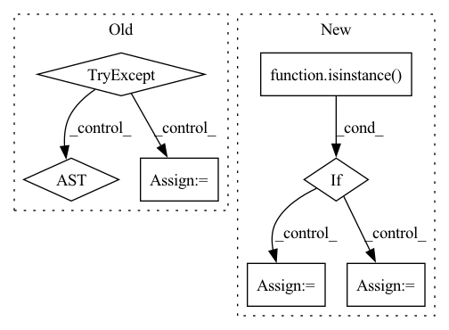

Pattern ID :3880
Before Change
)
x_train, y_train = df_train["feature"], df_train["label"]
x_valid, y_valid = df_valid["feature"], df_valid["label"]
try:
wdf_train, wdf_valid = dataset.prepare(["train", "valid"], col_set=["weight"], data_key=DataHandlerLP.DK_L)
w_train, w_valid = wdf_train["weight"], wdf_valid["weight"]
except KeyError as e:
w_train = pd.DataFrame(np.ones_like(y_train.values), index=y_train.index)
w_valid = pd.DataFrame(np.ones_like(y_valid.values), index=y_valid.index)
After Change
if reweighter is None:
w_train = pd.DataFrame(np.ones_like(y_train.values), index=y_train.index)
w_valid = pd.DataFrame(np.ones_like(y_valid.values), index=y_valid.index)
elif isinstance( reweighter, Reweighter) :
w_train = pd.DataFrame(reweighter.reweight(df_train))
w_valid = pd.DataFrame(reweighter.reweight(df_valid))
else:
raise ValueError("Unsupported reweighter type.")
In pattern: SUPERPATTERN
Frequency: 3
Non-data size: 7
Instances Fragment ID: 14688481
Project Name: microsoft/qlib
Commit Name: cf35562e8458bc10fc0760e6c30c560c4eb10734
Time: 2022-01-10
Author: you-n-g@users.noreply.github.com
File Name: qlib/contrib/model/pytorch_nn.py
M Class Name: DNNModelPytorch
N Class Name: DNNModelPytorch
M Method Name: fit(6)
N Method Name: fit(5)
M Parent Class: Model
N Parent Class: Model
M File Name: qlib/contrib/model/pytorch_nn.py
N File Name: qlib/contrib/model/pytorch_nn.py
M Start Line: 175
M End Line: 182
N Start Line: 170
N End Line: 187
Before Change
partial = ch.empty(*final_shape[1:],
dtype=memory_allocation.dtype,
device=memory_allocation.device)
try:
partial = partial.pin_memory()
except :
pass
result.append(partial)
else:After Change
for op_id, memory_allocation in memory_allocations.items():
// If the operation didn"t make a query we stop here
allocated_buffer = None
if isinstance( memory_allocation, AllocationQuery) :
allocated_buffer = self.allocate_query(memory_allocation,
batch_size,
batches_ahead)
elif isinstance(memory_allocation, Sequence):
allocated_buffer = tuple(
self.allocate_query(q, batch_size, batches_ahead) for q in memory_allocation
)
Fragment ID: 14688467
Project Name: libffcv/ffcv
Commit Name: 1e28d9884436db64131ee02d545d2c5374f19dc9
Time: 2021-11-13
Author: leclerc@mit.edu
File Name: ffcv/pipeline/pipeline.py
M Class Name: Pipeline
N Class Name: Pipeline
M Method Name: allocate_memory(3)
N Method Name: allocate_memory(3)
M Parent Class:
N Parent Class:
M File Name: ffcv/pipeline/pipeline.py
N File Name: ffcv/pipeline/pipeline.py
M Start Line: 70
M End Line: 105
N Start Line: 100
N End Line: 112
Before Change
node_processed = False
if node.op == "call_function" and node.target == torch.einsum:
// Get shapes:
try:
shapes = [a.shape for a in node.args[1:]]
except AttributeError:
warnings.warn(
f"einsum {repr(node)} lacked shape information; "
"not optimizing. "After Change
) -> torch.nn.Module:
if isinstance( model, fx.GraphModule) :
graph: fx.Graph = model.graph
else:
tracer: fx.Tracer = tracer_class()
graph: fx.Graph = tracer.trace(model)
model = tracer.root
out_mod = fx.GraphModule(model, graph) Fragment ID: 14688485
Project Name: linux-cpp-lisp/opt_einsum_fx
Commit Name: 1f0a34a7fbb639d1fbb2d09cb33fe49effef90e9
Time: 2021-03-07
Author: 1473644+Linux-cpp-lisp@users.noreply.github.com
File Name: opt_einsum_fx/_opt_ein.py
M Class Name: AnonimousClass
N Class Name: AnonimousClass
M Method Name: optimize_einsums(3)
N Method Name: optimize_einsums(1)
M Parent Class:
N Parent Class:
M File Name: opt_einsum_fx/_opt_ein.py
N File Name: opt_einsum_fx/_opt_ein.py
M Start Line: 12
M End Line: 70
N Start Line: 13
N End Line: 31